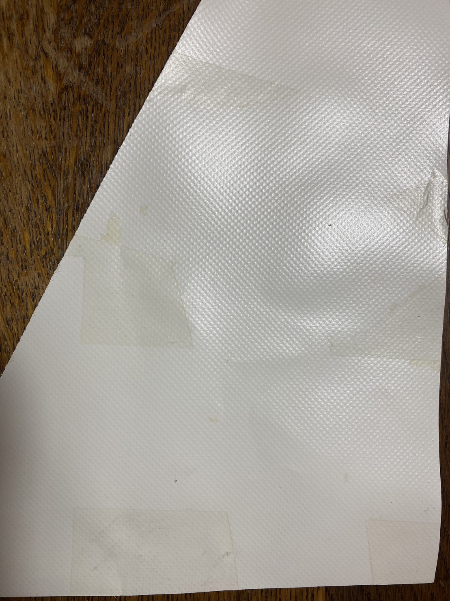
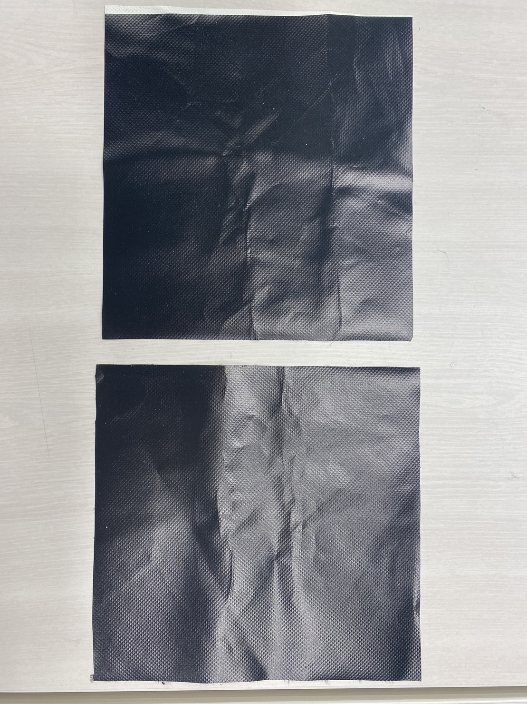

設計写真
試行錯誤していくにあたり生じた変更点
○ペーパークラフトのようなデザインの問題点
・展開図を自作するには専用のソフトやかなりたくさんの時間が必要
・著作権フリーの展開図で、カバーデザインとして使用できそうなものが無かった
・裁縫技術が拙いため、折り目を付けるための縫い方では防犯ブザーカバーのような小さい小物が作れなかった
といった問題が発生したため、最初にデザインしていたものは諦め、別デザインを考えることにした。
○新デザインをするにあたり
・最初同様大人っぽくシックなデザイン
・ミシンで裁縫するにあたり問題なく作成できるデザイン
・機能面で不備が無いデザイン
という条件でもう一度考え直すことにした。
そして新たに以下のデザインで製作することにした。
新設計写真
製作過程
○生地準備
ラボのミシンだとただでさえひどい裁縫技術が、慣れてないことによりもっと悲惨になりそうだったので
自宅にあるミシンで作業することにした。そのためまずは持ち帰るための生地の準備に取り掛かった。
＜横断幕をきれいにするための手順＞
１．たわしと洗剤で横断幕についている汚れや貼ってある文字などをはがす。
２．エタノールをかけて尖ったものでこすり、文字が貼ってあった糊跡を落とす。
（これを行うことによりかなりべたつきが無くなり、生地として使用可能な部分が増える）
３．糊跡がおちたあと、文字の跡に沿って汚れが目立ってしまうため、もう一度全体をたわしと洗剤で洗う。

糊のべたべたした跡は落ちたが、文字が貼ってあったところとそうでないところの色味や光沢感に少し差があり、
後にするUV印刷に影響しそうであったため、生地の表側ではなく裏側を使用することにした。
（糊のべたべたを落としたことにより、生地の表側を小物入れの内側にすることが可能になった。）
○生地印刷
全体的にまばらに洗っても汚れが落ちない部分があったため、全体的に黒くUVプリンターで印刷することにした。

汚れも隠せて色味も均一な、光沢感のある生地が出来上がった。